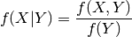
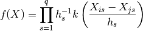
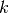

statsmodels.nonparametric.kernel_density.KDEMultivariateConditional.pdf¶
-
KDEMultivariateConditional.pdf(endog_predict=None, exog_predict=None)[source]¶ Evaluate the probability density function.
Parameters: endog_predict: array_like, optional
Evaluation data for the dependent variables. If unspecified, the training data is used.
exog_predict: array_like, optional
Evaluation data for the independent variables.
Returns: pdf: array_like
The value of the probability density at endog_predict and exog_predict.
Notes
The formula for the conditional probability density is:

with

where  is the appropriate kernel for each variable.